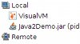
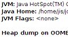
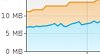
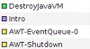
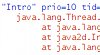
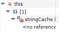
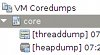
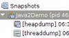

Возможности
VisualVM — инструмент для мониторинга и устранения неполадок приложений Java. Он работает на Oracle/Sun JDK (Java Development Kit, комплект разработки Java) 7+ (или JDK 6+ для VisualVM 1.3.6 и более ранних версий), но умеет мониторить приложения, работающие на JDK 1.4 и выше. Он использует различные доступные технологии: jvmstat, JMX, Serviceability Agent (SA) и Attach API — чтобы получать данные и автоматически выбирает самую быструю и лёгкую технологию, чтобы минимально нагружать наблюдаемые приложения.
Встроенных возможностей достаточно для разработчиков приложений, системных администраторов, инженеров по качеству и — не в последнюю очередь — пользователей приложений, которые отправляют отчёты об ошибках со всеми нужными сведениями.
Демонстрация
Возможности
jstatd).
Приложения также можно задать вручную через подключение JMX. Так легко увидеть, какие приложения Java работают в вашей системе, или проверить, жив ли процесс удалённого сервера J2EE.
{kind=link}
java, версия JVM (Java Virtual Machine, виртуальная машина Java), каталог JDK, флаги и аргументы JVM и системные свойства.
{kind=link}

{kind=link}

{kind=link}
 Профилирование производительности приложения или анализ выделения памяти.
В VisualVM есть встроенный Profiler (профилировщик) приложения, который одним щелчком мыши без дополнительной настройки показывает, где тратится больше всего времени или какие объекты потребляют больше всего памяти.
Профилирование производительности приложения или анализ выделения памяти.
В VisualVM есть встроенный Profiler (профилировщик) приложения, который одним щелчком мыши без дополнительной настройки показывает, где тратится больше всего времени или какие объекты потребляют больше всего памяти.

{kind=link}
hprof и умеет просматривать дампы кучи, созданные JVM при OutOfMemoryException.
{kind=link}

{kind=link}

{kind=link}
Расширяемость
 Поскольку VisualVM построен на NetBeans Platform, его архитектура модульная и легко расширяется plugin (плагинами). В VisualVM Plugin Center доступны различные
плагины, включая сторонние; другие плагины можно получить отдельной загрузкой у их авторов. Список
сейчас доступных плагинов — на странице Plugins (плагины).
Поскольку VisualVM построен на NetBeans Platform, его архитектура модульная и легко расширяется plugin (плагинами). В VisualVM Plugin Center доступны различные
плагины, включая сторонние; другие плагины можно получить отдельной загрузкой у их авторов. Список
сейчас доступных плагинов — на странице Plugins (плагины).
Если нужна особая возможность или поддержка проприетарного инструмента, можно написать свой плагин. Это несложно: для API NetBeans Platform и VisualVM есть много сведений и примеров кода. Хорошая отправная точка — страница Developer Documentation (документация для разработчиков).
Интеграция с IDE
VisualVM можно интегрировать с IDE, чтобы мониторить и анализировать код итеративно во время разработки. Интеграция доступна для этих IDE:
- Eclipse IDE: VisualVM запускается вместе с наблюдаемым приложением и автоматически открывает его после старта, чтобы мониторинг или профилирование было удобнее. См. Eclipse launcher for VisualVM page (страница Eclipse launcher для VisualVM) для сведений и получения плагина.
- NetBeans IDE: используйте профилировщик NetBeans! NetBeans уже даёт базовые возможности мониторинга и предлагает полнофункциональный профилировщик, плотно встроенный в рабочий процесс IDE. Дополнительно к VisualVM есть поддержка JDK 5, удалённое профилирование, профилирование Java EE, автоматический анализ кучи, интеграция с проектами/исходниками и многое другое. См. profiler module home (домашняя страница модуля профилировщика) для подробностей.
Матрица возможностей
| Возможность | JDK 1.4.2 локально/удалённо | JDK 5 локально/удалённо | JDK 6 локально | JDK 6 удалённо |
| Overview | ||||
| System Properties (in Overview) | ||||
| Monitor | ||||
| Threads | ||||
| Profiler | ||||
| Thread Dump | ||||
| Heap Dump | ||||
| Enable Heap Dump on OOME | ||||
| MBean Browser (plugin) | ||||
| Wrapper for JConsole plugins (plugin) |